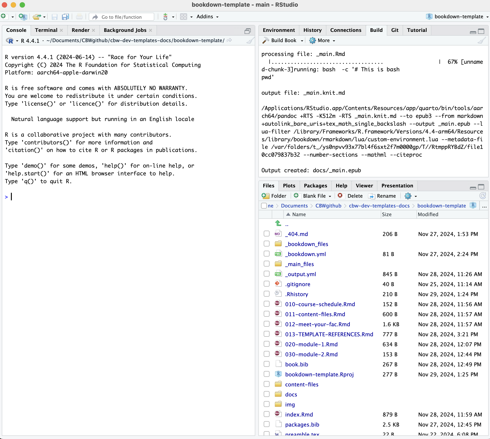
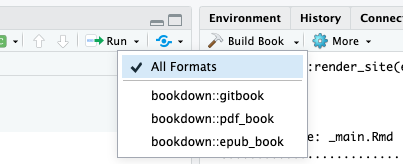

5 So What Do These Files Mean?
Ok now we have our workshop locally (on our computer), which is made up of all these files and folders?
Before we dive deep into what to do with these folders, let’s explore how bookdown actually works and how to understand RStudio.
5.1 Bookdown Simple Explanation
Here is a general summary of how Bookdown creates html websites from .Rmd files.
Essentially, knitr renders and runs all the code, and the outputs are converted into markdown. After knitr, we essentially have a bunch of only markdown files.
Pandoc translates this markdown into html, so that we get a website! It can be helpful to know when and how these packages work, to help debug later on!
Now, let’s figure out RStudio. Skip to file setup if you already know how to use RStudio (and it’s built in git control window).
5.2 Opening Your Bookdown Project RStudio
Enter the folder you just git cloned using Findr/File Command, it should be titled “[workshop-name]”. Right click on [workshop-name].Rproj and press “Open in RStudio”. There is only one file with this file extension. The .Rproj file is what you will open each time you want to work on this workshop! You must explicitly open the .Rproj file to build properly!
A RStudio window should open up and look something like the image below.

5.3 Explaining RStudio
In the bottom left, have our console and other debug related windows (such as terminal!). Any code we run will appear in the console. We can access the terminal (just like editing in the Terminal app) under the “Terminal” tab.
In the bottom right, we have all of our files and subfolders. These files will be explained below. This window also contains helpful views, like “Viewer” and “Plots”. We will touch on these later.
Try opening index.Rmd: a new pane will open in the top left that shows the contents of index.Rmd. This is where we will be editing our files! Notice, the “Knit” button.
In your top right, we have a different window with more different views. The most relevant windows to us are the “Build” and the “Git” windows.
No “Git” Window?
Try closing (and maybe even restarting RStudio) and then reopening it. A “Git” tab should appear to the right of the “Build” tab and to the left of the “Tutorial” tab.
5.4 Build the Book
Try pressing “Build Book” within the “Build” window. Your build window is going to fill up with text, and soon, a website is going to pop-up as your new window. This is the website you will be editing to create your workshop!
By building the book, all of these files were compiled and converted to .html files, that create a website. Each time we make local changes to our files and we want them to appear in our website, we need to rebuild the book. Note that each time we build our book, the files we edited will be saved first (we don’t have to save before building!).
Note: By default, RStudio will choose to build “All Formats”: 
You can choose to only produce a gitbook (the first option). This can be helpful if you are encountering errors claiming that “bookdown::render_book() failed to render the output format ‘bookdown::pdf_book’/bookdown::epub_book’”. Additionally, not producing all output formats can decrease your build time significantly! (However, not being able to produce the other ouputs may suggest there is an underlying bug. It is ideal to be abble to produce all outputs.)
5.4.1 Other Ways to Build Your Book
- Build the book from the R console:
- Press the keyboard buttons:
cmd + shift + B(macOS) ORctrl + shift + B(windows)
5.4.2 Knit Your Book
Building can take a long time. If you are editing just one file, you can press the “Knit” button that is at the top of the window with your file. This will run the code in the page, and show you what that page would look like in the website (as well as saving that file).
Note: Other pages in your website will not update.
A quicker way to knit is using the keboard controls
cmd + shift + K(macOS) ORctrl + shift + K(Windows)
5.4.2.1 Knit VS Build
Building creates the website using ALL the .Rmd (and other) files. This is why it takes so long. Knitting creates/updates only the .Rmd file you’re currently working in and reruns your code. (Note: You can’t knit a non-.Rmd file!)
Before pushing to GitHub, it is a good idea to build, in case of faulty links or small bugs that occur if you only knit or preview.
5.4.3 Preview Your Book
If you want live updates to your changes, you can preview the page as you edit the book when you save individual .Rmd files. You can start the server in a work session by using the RStudio add-in “Preview book”, or from the R console (in the bottom left window):
But which files do we edit? Well alas, it’s time to discuss the file setup.
5.5 File Setup Explanation
Recall:
Hence, all the .Rmd files create a page in the produced website! To create more pages, you will be creating more .Rmd files.
Here is a tree diagram of the bookdown template setup. (Note that this mimics how RStudio displays the files, if your RStudio shows these template files in a different order, right click your file window and press “Reload”)
Note: only relevant files or files you might be concerned about are explained in blue. If there is no explanation, you can safely assume you do not have to worry about it.
bookdown-template
├── _404.md # This becomes your 404 page. This is the only file that can become a page that can also be either a .md or .Rmd file!
├── _bookdown.yml # a config file, you most likely won't have to edit it unless you want additional configuration settings
├── _bookdown_files
├── _main_files
└── ... # [in case of confusion: image and pdf output files]
├── _output.yml # a config file, RC/workshop team will have to edit a few things (the workshop name, sponsor images, repo link)
├── .gitignore
├── .Rhistory
├── 010-course-schedule.Rmd # --> "Course Schedule" section
├── 011-content-files.Rmd # --> "Pre-workshop Materials" and "Computing Setup & Downloads" section
├── 012-meet-your-fac.Rmd # --> "Meet Your Faculty" section
├── 020-module-1.Rmd #--> "Module 1", "Lecture, and "Lab" section
├── 030-module-2.Rmd
├── README.md # README file that has some helpful explanations, consider reading this before starting to edit (along with this documentation!)
├── book.bib
├── bookdown-template.Rproj # always open this file in RStudio, opening this helps bookdown understand what to build
├── content-files # store all files from your modules here (ex. data sets, empty code worksheets)
└── sample-pdf.pdf
├── docs
└── ... # html files & other generated content
├── img # folder where you should store all your images
├── bioinformatics.ca-logo.svg
├── faculty # store all images of faculty in this folder
├── michelle-brazas.jpg
└── nia-hughes.jpeg
├── favicon.ico
└── sponsors # store all sponsor logos/titles in this folder
└── Your-Sponsor-Here.svg
├── index.Rmd # landing page --> "Welcome" section
├── packages.bib
├── preamble.tex
└── style.css # css styling options are defined here - feel free to add your own styling features_output.yml & _bookdown.yml
2 important files are the _output.yml files and the _bookdown.yml files. They help tell bookdown what we want and what to do, especially when making our website.
You will only have to edit _output.yml a bit. The _output.yml file creates the table of contents/sidebar you see on the left of the workshop. It is written in HTML, which is why it looks so different. There are 3 things either the RC or the workshop team will need to do:
Change the workshop name: [YOUR WORKSHOP NAME] on line 7.
Add your sponsors: Replace “Your-Sponsor-Here.svg” with the file name of your sponsors name/logo. Remeber to place these files inside the ./img/sponsors/ folder.
Replace your workshop repo edit link. This allows users to suggest edits to your work on GitHub. Follow these instructions (they are also provided in the template).
- Go to your index.Rmd page on GitHub, Copy and paste the link to it.
- Copy and paste the link to it, excluding the “index.Rmd” ending.
- Add “/%s” to the ending.
- Replace the above link.
Organizing the Table of Contents
The order of the sidebar is completely dependent on the alphabetical order of the files (see your bottom right window pane! The order is generally the same as the order shown in the RStudio file window pane). Our template has numbering first, to help ease our understanding and organization of files. The only file without this is index.Rmd, since as the landing page we can not change the file name.
index.Rmd
The only .Rmd that must have some configuration details is the landing page: index.Rmd. This is what fills up the beginning of the index.Rmd file, before the ---, which tells bookdown to stop looking for configuration information.
.Rmd Files
Let’s move on to discussing the breakdown of the .Rmd files. Each new page is defined by a new header, which starts with #, each subheader has increasingly more # symbols (##, ###, and more all create smaller subheaders). Try to have only 1 single # as a header on one page! (You may get warnings otherwise).
How to Create a New File
You can create new files anywhere. You should only be making new website pages, so you should also only be making .Rmd files. (Creating new .md files in hopes of making a new page usually ends up with weird bugs, stick to .Rmd files).
- Under the “Files” tab of the lower right window pane, there are many options to modify your files. You can use these buttons instead of your File Explorer. Click “New Blank File”.
- Click the second dropdown option: R Markdown
- Give your file a unique name that matches CBW’s Bookdown template file naming convention. That is, “0XX-[description].Rmd”. Decide what X should be depending on where you want the page to show up on your sidebar. Name your file a short but descriptive name, with hyphens (-) to split up words.
- Start editing your new file in the upper left window!
404 Page
That being said, there is one file that can be a markdown (.md) file: the _404.(R)md file. If website user goes to a webpage that belongs to our website but no longer exists, they will get this 404 page instead. Put links to your landing page for your workshop or the bioinformatics.ca homepage here!
CBW Organization Folders
We want our workshops to be easy to navigate and understand. Hence, images or files that are required for your lessons should be placed in ./img/ and ./content-files/ respectively. Within these files, try creating sub-folders within these folders to help organize groups of files. For example, if you have a bunch of data sets, try creating a “datasets” folder within ./content-files/.
Subfolders already exist in ./img: ./img/faculty/ and ./img/sponsors/. Fill these with photos of your faculty and images of the names’/logos’ of your sponsors, respectfully!
Bookdown’s Wesbite Building Folders
Bookdown makes some folders to store .html files, among other files that help create the website. Hence, you should not (need to) touch:
- _bookdown_files
- _main_files
- docs
Debugging Tip: If you do get an error that seems like it’s coming from one of these files, there was probably an error that resulted from bookdown not being able to process something. Double check that your syntax, formatting, file names and related files are correct.
Debugging Tip 2: Each time we build, we produce a “docs” folder. If we have already built once, we just add new files to it. HTML files that were produced from .Rmd that were deleted are not removed. Hence, if you see errors from files that no longer exist in your root project folder, try deleting the whole docs folder, and rebuilding.
5.6 Push to GitHub via RStudio
Now, we know what our files mean and how to edit them. How do we get this onto GitHub? We can write git commands into our Terminal/Command Prompt, or alternatively (and more easily), RStudio has a built-in git interface.
Now, we will be able to see a Git window in the top right. Click “Git” to open this window.

Let’s say we only edited index.Rmd, now we see the newly edited files. Changed files that need to be updated on GitHub will show up in this window, like how index.Rmd is seen above. (Do not worry too much about .DS_Store and .gitignore do.) Let’s try to push this change to GitHub.
Select all the edited files.

Then, click the Commit button, which appears above your selected items. A window pane will appear (shown below).

Add a commit message in the corresponding box, and then press commit below it.
A new window will show up, detailing your updates. Close this window and then press Push to push your updates to GitHub.

Now, we’re done! We should see the updates on GitHub now. Also note, if we ever want to pull updates from GitHub, there is also a Pull button in the Git window within RStudio!
Git pushing puts your edits onto GitHub, git pulling takes the edits make on GitHub, and brings them to your local computer. For example, if one of your workshop team members made an edit, you want to have that edit on your computer before you start editing! It’s a good idea to do this (git pull - upper right window, “Pull” button) before you start editing, in case somehow your edits conflicts with their edits.
Git pushing will automatically update the website, you can see the updates and progress in the actions window we saw previously. (Check out your website on the web once it’s done deploying!)